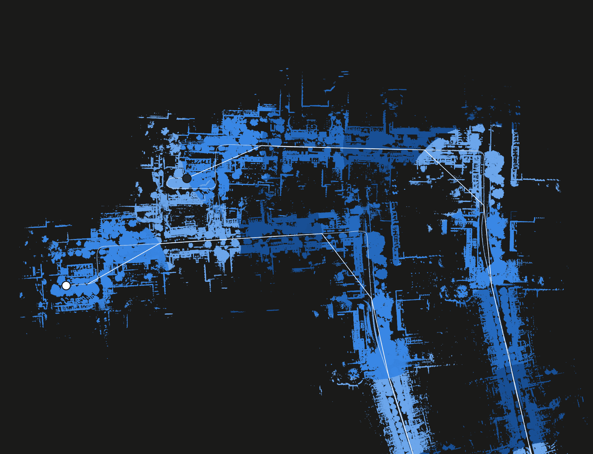
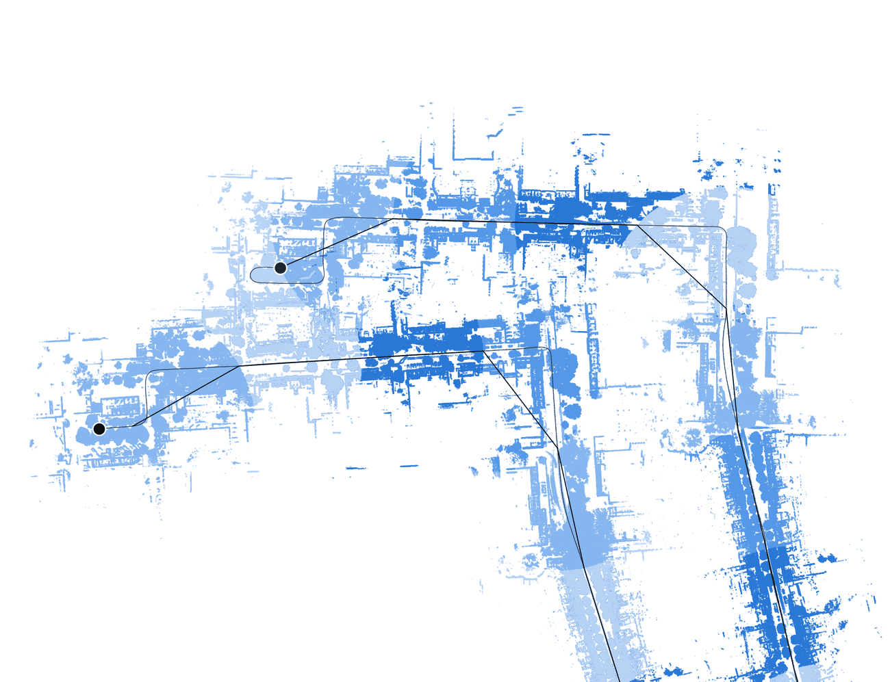
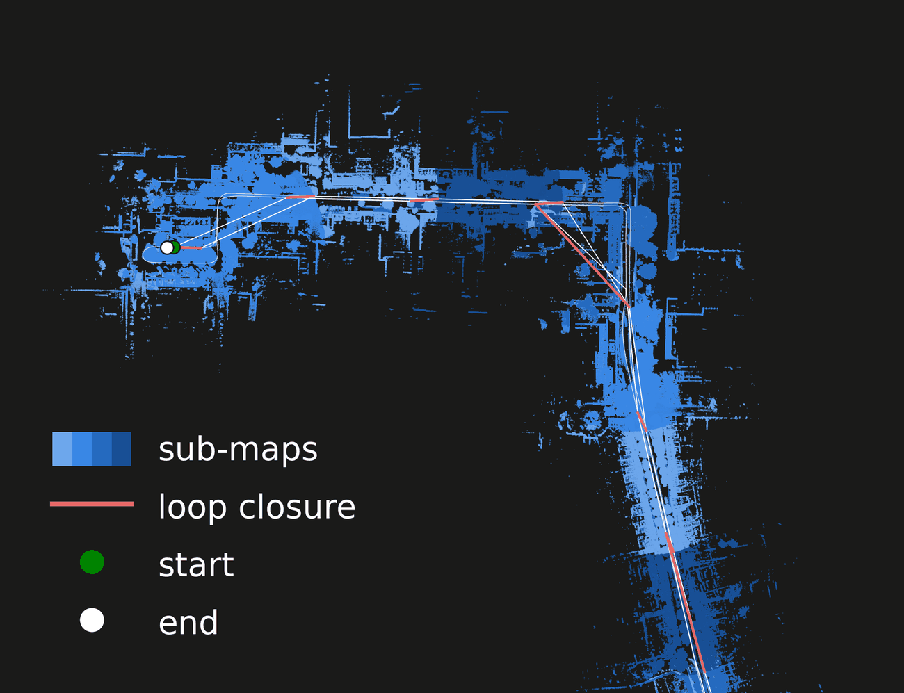
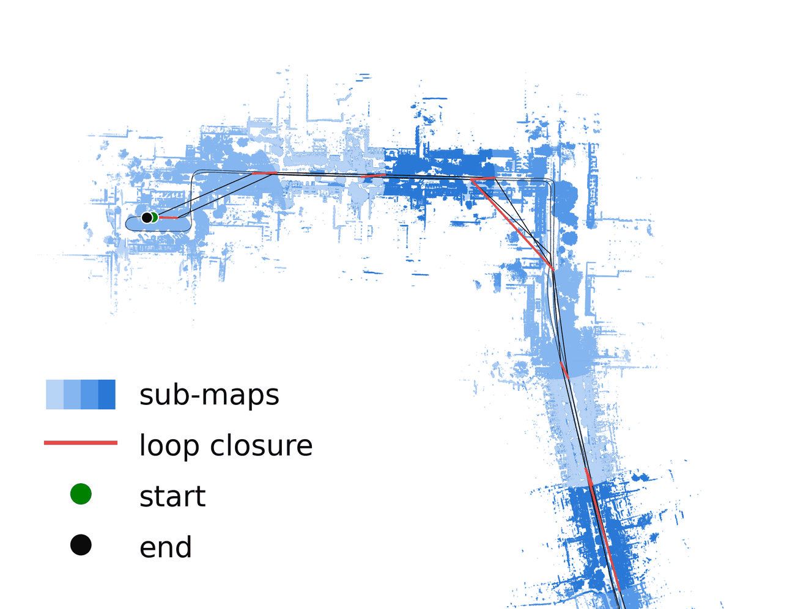
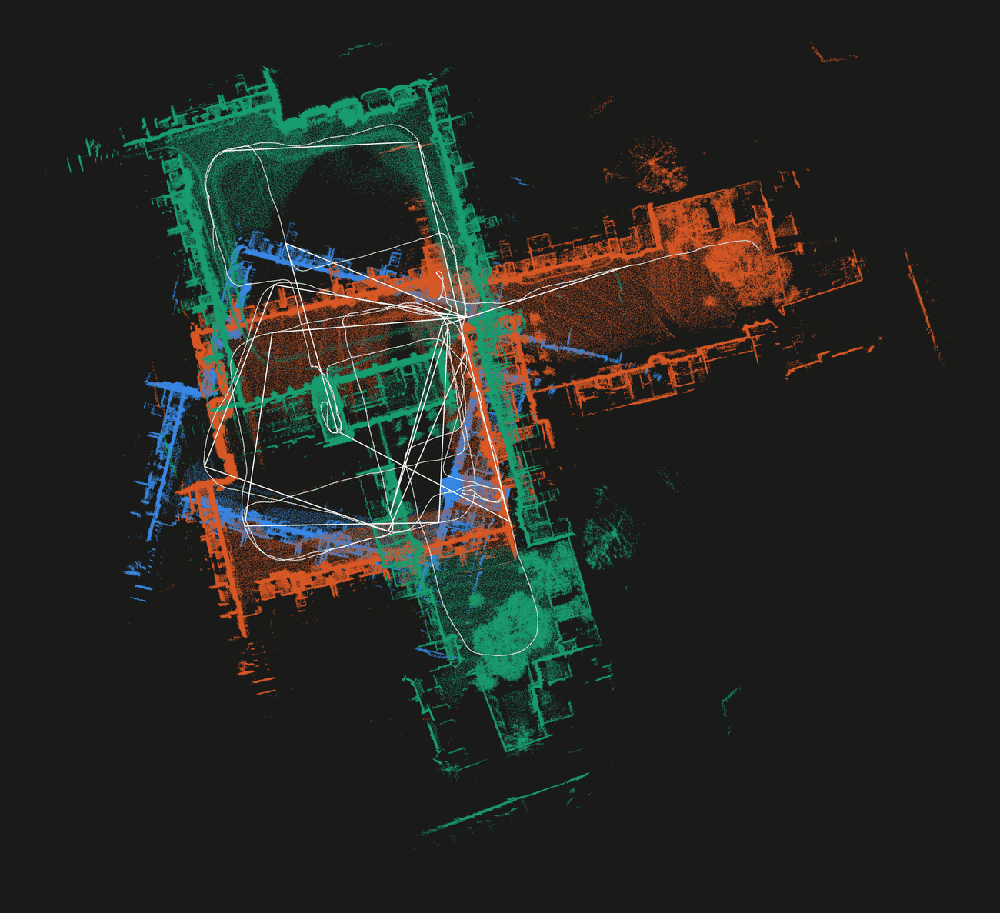
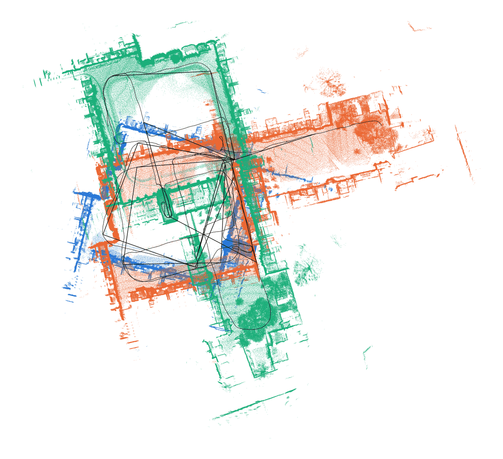
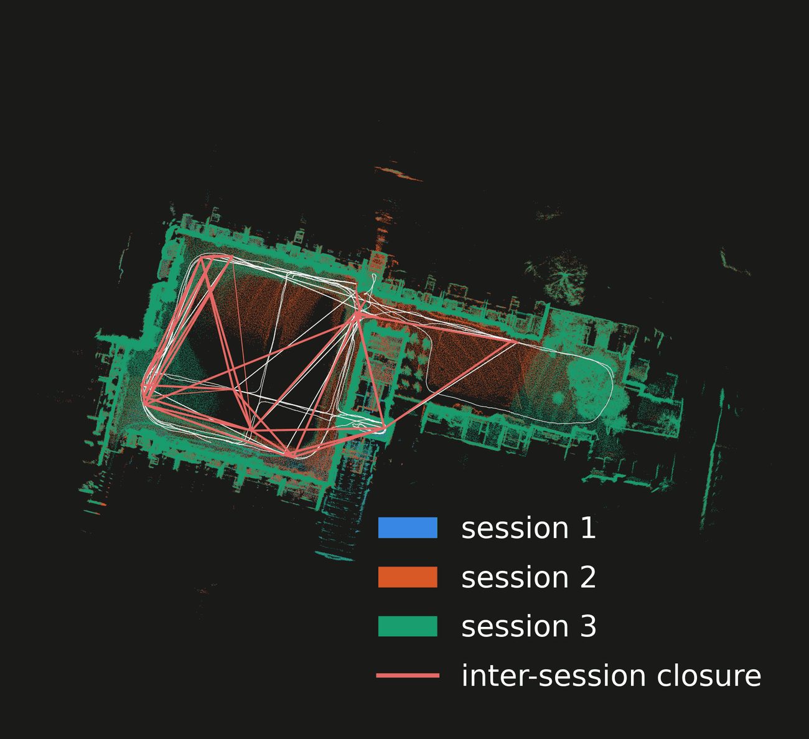
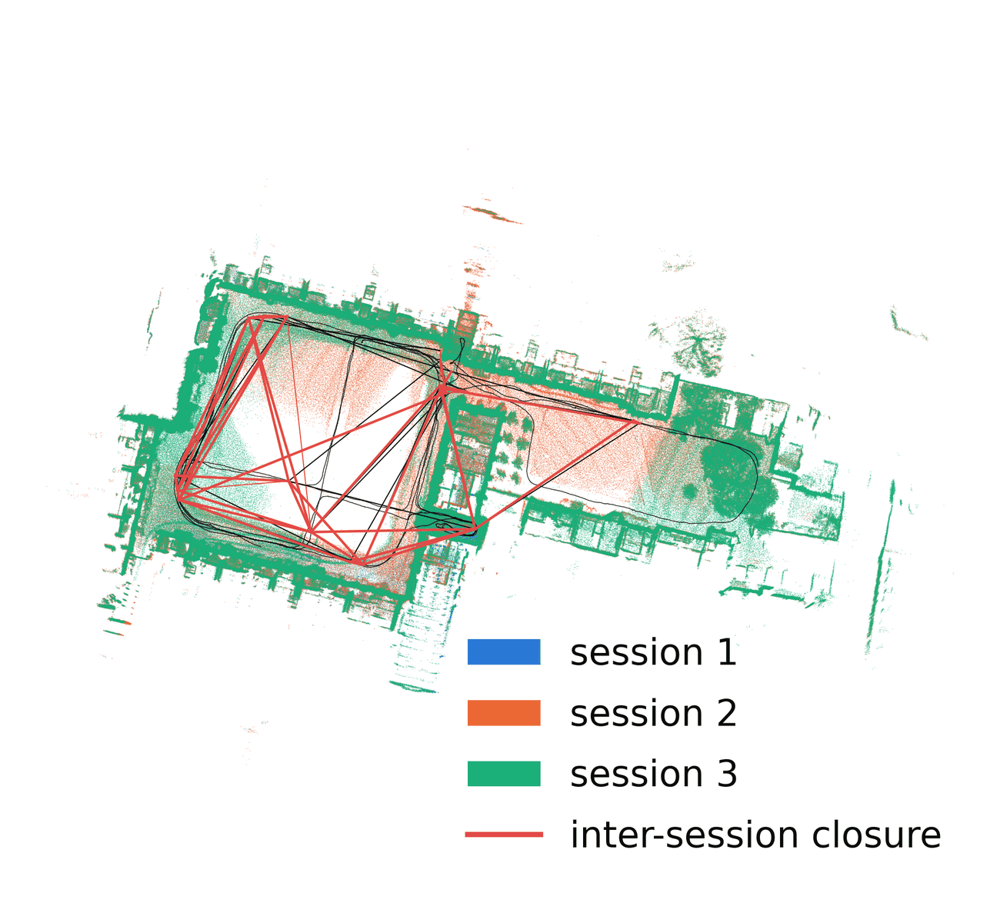

rko_slam#
ROS2 LiDAR-inertial SLAM for your odometry: drift correction and multi-session alignment.




A 3 km drive that ends where it started, with rko_lio, and with rko_slam running on top of it.
An odometry tells you how you moved. Over a long enough run its estimate drifts, and when you come back to a place you
have been before, the two visits do not land on the same spot. rko_slam runs next to the odometry, uses the LiDAR and
IMU, recognizes the revisit, and corrects the whole trajectory behind you. You keep the odometry as it is, and you
additionally get a map <- odom correction on TF, a pose graph, and the sub-maps the system built along the way.
The odometry it assumes by default is rko_lio, my LiDAR-inertial odometry package.
rko_lio is also a build dependency, rko_slam uses its voxel map and deskewing internally. At run time though, any
odometry that publishes odom <- base on TF and is locally consistent will do - LiDAR-only odometry, wheel odometry,
whatever you already run. The IMU is optional as well: leave imu_topic unset and rko_slam runs on the LiDAR alone.
ros2 launch rko_slam slam.launch.py lidar_topic:=/rko_lio/deskewed_scan imu_topic:=/your/imu rviz:=true
Multi-session alignment#
The same revisit detector works across runs, not just within one, as an offline step. Give it the run directories of several sessions of the same place - different days, different directions, whatever - and it finds where they overlap and solves all of them into one frame. No bags and no live topics, it only reads what the runs already dumped. Merging can also tighten each session’s own trajectory, not only place them in one frame.




Three sessions of the same place, recorded on different days, and the one frame they end up in.
ros2 launch rko_slam align.launch.py run_dirs:="[results/run_1, results/run_2]"
Where to go#
Build and run: build it, run it online or on a bag, read what it publishes, use what it writes.
Configuration: every parameter and what it does.
How it works: sub-maps, closure detection, the pose graph, and how sessions are aligned.
Citation#
This work was developed as part of my thesis (published soon), and much of it is inspired by KISS-SLAM - the initial version was essentially a reimplementation for ROS2. Closure detection reimplements MapClosures. If you find it useful, consider leaving a star on rko_slam and on KISS-SLAM, and citing the original publication:
@INPROCEEDINGS{kiss2025iros,
author = {Guadagnino, Tiziano and Mersch, Benedikt and Gupta, Saurabh and Vizzo, Ignacio and Grisetti, Giorgio and Stachniss, Cyrill},
booktitle = {2025 IEEE/RSJ International Conference on Intelligent Robots and Systems (IROS)},
title = {{KISS-SLAM: A Simple, Robust, and Accurate 3D LiDAR SLAM System With Enhanced Generalization Capabilities}},
year = {2025},
pages = {5363-5370},
doi = {10.1109/IROS60139.2025.11246613}
}
If the default odometry, rko_lio, was useful to you, consider a star there and citing its paper:
@article{malladi2026ral,
author = {M.V.R. Malladi and T. Guadagnino and L. Lobefaro and C. Stachniss},
title = {A Robust Approach for LiDAR-Inertial Odometry Without Sensor-Specific Modeling},
journal = {IEEE Robotics and Automation Letters},
year = {2026},
volume = {11},
number = {6},
pages = {7420--7427},
doi = {10.1109/LRA.2026.3685966},
}